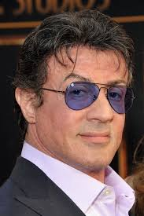
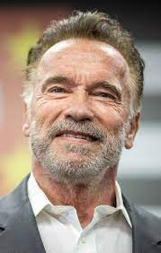
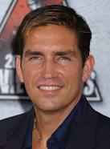
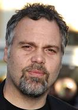
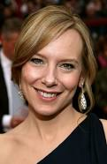

Nascido em 6 de julho de 1946, Michael Sylvester Gardenzio Stallone, mais conhecido como Sylvester Stallone ou também Sly Stallone é um ator, roteirista e diretor americano, conhecido por seus papéis em filmes de ação de Hollywood. Dois de seus notáveis personagens são o boxeador Rocky Balboa e o soldado John Rambo. As franquias Rocky e Rambo, juntamente com vários outros filmes, reforçaram a sua reputação como ator e renderam boas bilheterias. O filme Rocky que foi escrito e estrelado por Stallone foi introduzido no National Film Registry assim como no Museu Smithsonian. Stallone usou a frente da entrada para o Museu de Arte da Filadélfia na série Rocky, o que levou a área a ser apelidada de degraus de Rocky. Filadélfia tem uma estátua do personagem Rocky colocada permanentemente perto do museu, do lado direito antes dos degraus. Foi anunciado em 7 de dezembro de 2010 que Stallone tinha sido votado no International Boxing Hall of Fame.

Nascido em 30 de julho de 1947, Arnold Schwarzenegger é um ator, político e empresário austro-americano. Ex-fisiculturista, foi herói de diversos filmes de ação, entre eles: “O Exterminador do Futuro” e “Conan, o Bárbaro”. Foi o 38º governador do estado da Califórnia permanecendo no cargo por dois mandatos, entre 2003 e 2011. Apaixonado por artes marciais e esportes radicais, Schwarzenegger iniciou um treinamento físico intenso aos 15 anos de idade, visando sua saúde e a vaidade em definir seu corpo. Nesta época desejava trabalhar como modelo fotográfico. No final de sua adolescência conheceu o fisiculturismo, e desistiu da carreira de modelo, passando a se dedicar a treinos mais intensos para alcançar o máximo potencial de seu porte físico, cujo objetivo era ganhar cada vez mais músculos. Aos 20 anos foi premiado com o título de Mr. Universe e, ao longo de sua carreira, venceu o concurso Mr. Olympia um total de sete vezes. Permaneceu como uma personalidade proeminente no fisiculturismo, mesmo após sua aposentadoria, e escreveu vários livros e inúmeros artigos sobre o esporte.

James Patrick "Jim" Caviezel, Jr. (Mount Vernon, 26 de setembro de 1968) é um ator estadunidense. Iniciou sua carreira em 1991, no filme My Own Private Idaho, o qual lhe rendeu o cartão Screen Actors Guild. Não conseguindo alcançar fama, decidiu se mudar para Los Angeles, onde poderia ter maiores oportunidades de reconhecimento. Logo depois, em 1992, apareceu na série de televisão The Wonder Years. Alcançou algum sucesso como o Soldado Witt no filme The Thin Red Line (1998), um drama de guerra referente à Segunda Guerra Mundial. Nos anos de 2001 e 2002, Caviezel recebeu aclamação da crítica pelos seus papéis como Catch em Angel Eyes e Edmond Dantès em The Count of Monte Cristo.

Vincent Philip D'Onofrio (Brooklyn, 30 de junho de 1959) é um ator estadunidense, produtor e diretor. Ele é conhecido por seus papéis principais e coadjuvantes no cinema e na televisão. Ele foi indicado ao Prêmio Emmy do Primetime/ Emmy Awards e dois Saturn Awards, ganhando um por seu papel coadjuvante em Men in Black. Seus papéis incluem o soldado Leonard "Pyle" Lawrence em Full Metal Jacket (1987), Edgar the Bug em Men in Black (1997) e The Series (1997-2001), Carl Stargher em The Cell (2000), Detetive Robert Goren em Law & Order: Criminal (2001-10), Wilson Fisk/Kingpin em Daredevil (2015-18) e como Vic Hoskins em Jurassic World (2015).

Amy Beth Dziewiontkowski (Queens, Nova Iorque, 3 de maio de 1969), mais conhecida como Amy Ryan, é uma atriz norte-americana. Foi indicada ao Oscar de Melhor Atriz (coadjuvante/secundária) em 2008 por seu trabalho em Medo da Verdade, trabalho que lhe recebeu diversos prêmios da crítica. Também atua no teatro e na televisão.
Pagina inicial